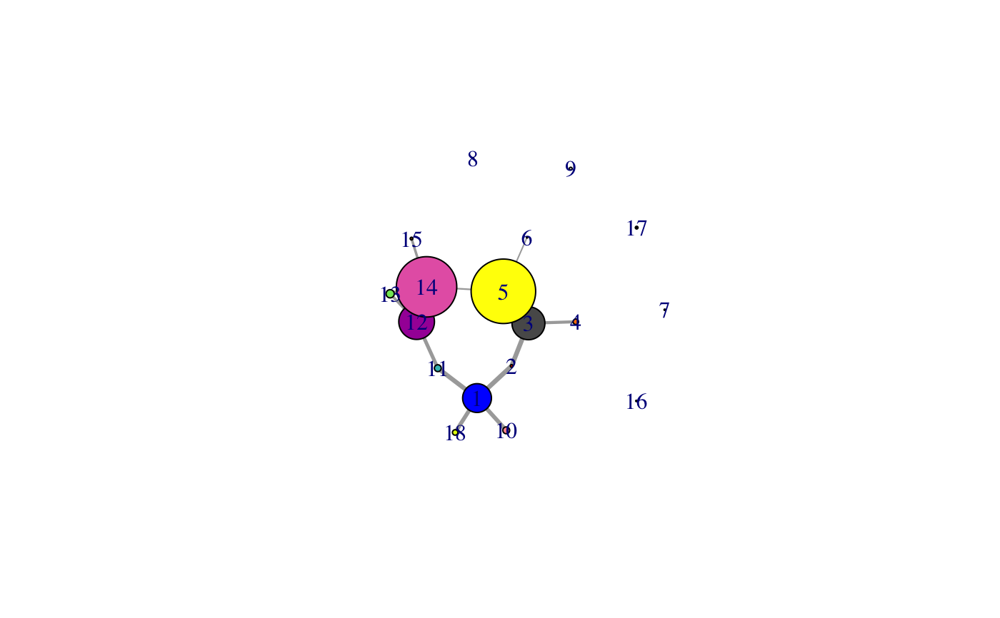
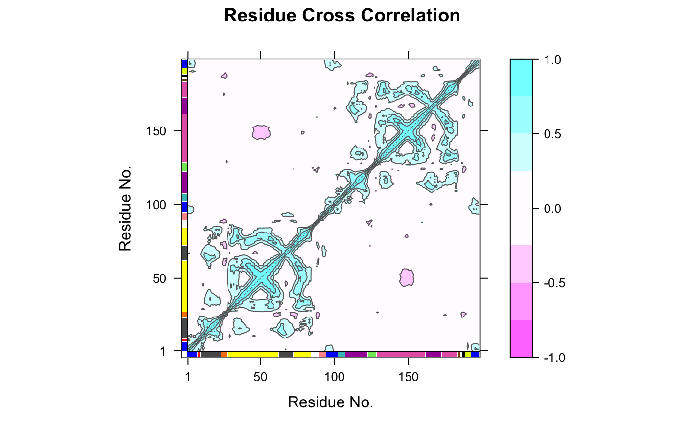

cna.RdThis function builds both residue-based and community-based undirected weighted network graphs from an input correlation matrix, as obtained from the functions ‘dccm’, ‘dccm.nma’, and ‘dccm.enma’. Community detection/clustering is performed on the initial residue based network to determine the community organization and network structure of the community based network.
cna(cij, ...) # S3 method for dccm cna(cij, cutoff.cij=0.4, cm=NULL, vnames=colnames(cij), cluster.method="btwn", collapse.method="max", cols=vmd_colors(), minus.log=TRUE, ...) # S3 method for ensmb cna(cij, ..., ncore = NULL)
| cij | A numeric array with 2 dimensions (nXn) containing atomic correlation values, where "n" is the residue number. The matrix elements should be in between 0 and 1 (atomic correlations). Can be also a set of correlation matrices for ensemble network analysis. See ‘dccm’ function in bio3d package for further details. |
|---|---|
| ... | Additional arguments passed to the methods
|
| cutoff.cij | Numeric element specifying the cutoff on cij matrix values. Coupling below cutoff.cij are set to 0. |
| cm | (optinal) A numeric array with 2 dimensions (nXn) containing binary contact values, where "n" is the residue number. The matrix elements should be 1 if two residues are in contact and 0 if not in contact. See the ‘cmap’ function in bio3d package for further details. |
| vnames | A vector of names for each column in the input cij. This will be used for referencing residues in a similar way to residue numbers in later analysis. |
| cluster.method | A character string specifying the method for
community determination. Supported methods are: |
| collapse.method | A single element character vector specifing the ‘cij’ collapse method, can be one of ‘max’, ‘median’, ‘mean’, or ‘trimmed’. By defualt the ‘max’ method is used to collapse the input residue based ‘cij’ matrix into a smaller community based network by taking the maximium ‘abs(cij)’ value between communities as the comunity-to-community cij value for clustered network construction. |
| cols | A vector of colors assigned to network nodes. |
| minus.log | Logical, indicating whether ‘-log(abs(cij))’ values should be used for network construction. |
| ncore | Number of CPU cores used to do the calculation. By default, use all available cores. |
Returns a list object that includes igraph network and community objects with the following components:
An igraph residue-wise graph object. See below for more details.
An igraph residue-wise community object. See below for more details.
An igraph community-wise graph object. See below for more details.
Numeric square matrix containing the absolute values of the atomic correlation input matrix for each community as obtained from ‘cij’ via application of ‘collapse.method’.
Numeric square matrix containing the absolute values of the atomic correlation input matrix.
The input to this function should be a correlation matrix as obtained from the ‘dccm’, ‘dccm.mean’ or ‘dccm.nma’ and related functions. Optionally, a contact map ‘cm’ may also given as input to filter the correlation matrix resulting in the exclusion of network edges between non-contacting atom pairs (as defined in the contact map).
Internally this function calls the igraph package functions ‘graph.adjacency’, ‘edge.betweenness.community’, ‘walktrap.community’, ‘fastgreedy.community’, and ‘infomap.community’. The first constructs an undirected weighted network graph. The second performs Girvan-Newman style clustering by calculating the edge betweenness of the graph, removing the edge with the highest edge betweenness score, calculates modularity (i.e. the difference between the current graph partition and the partition of a random graph, see Newman and Girvan, Physical Review E (2004), Vol 69, 026113), then recalculating edge betweenness of the edges and again removing the one with the highest score, etc. The returned community partition is the one with the highest overall modularity value. ‘walktrap.community’ implements the Pons and Latapy algorithm based on the idea that random walks on a graph tend to get "trapped" into densely connected parts of it, i.e. a community. The random walk process is used to determine a distance between nodes. Nodes with low distance values are joined in the same community. ‘fastgreedy.community’ instead determines the community structure based on the optimization of the modularity. In the starting state each node is isolated and belongs to a separated community. Communities are then joined together (according to the network edges) in pairs and the modularity is calculated. At each step the join resulting in the highest increase of modularity is chosen. This process is repeated until a single community is obtained, then the partitioning with the highest modularity score is selected. ‘infomap.community’ finds community structure that minimizes the expected description length of a random walker trajectory.
Guido Scarabelli and Barry Grant
plot.cna, summary.cna,
vmd.cna, graph.adjacency,
edge.betweenness.community,
walktrap.community,
fastgreedy.community,
infomap.community
# \donttest{ # PDB server connection required - testing excluded if (!requireNamespace("igraph", quietly = TRUE)) { message('Need igraph installed to run this example') } else { ##-- Build a correlation network from NMA results ## Read example PDB pdb <- read.pdb("4Q21") ## Perform NMA modes <- nma(pdb) #plot(modes, sse=pdb) ## Calculate correlations cij <- dccm(modes) #plot(cij, sse=pdb) ## Build, and betweenness cluster, a network graph net <- cna(cij, cutoff.cij=0.35) #plot(net, pdb) ## within VMD set 'coloring method' to 'Chain' and 'Drawing method' to Tube #vmd.cna(net, trim.pdb(pdb, atom.select(pdb,"calpha")), launch=TRUE ) ##-- Build a correlation network from MD results ## Read example trajectory file trtfile <- system.file("examples/hivp.dcd", package="bio3d") trj <- read.dcd(trtfile) ## Read the starting PDB file to determine atom correspondence pdbfile <- system.file("examples/hivp.pdb", package="bio3d") pdb <- read.pdb(pdbfile) ## select residues 24 to 27 and 85 to 90 in both chains inds <- atom.select(pdb, resno=c(24:27,85:90), elety='CA') ## lsq fit of trj on pdb xyz <- fit.xyz(pdb$xyz, trj, fixed.inds=inds$xyz, mobile.inds=inds$xyz) ## calculate dynamical cross-correlation matrix cij <- dccm(xyz) ## Build, and betweenness cluster, a network graph net <- cna(cij) # Plot coarse grained network based on dynamically coupled communities xy <- plot.cna(net) plot.dccm(cij, margin.segments=net$communities$membership) ##-- Begin to examine network structure - see CNA vignette for more details net summary(net) attributes(net) table( net$communities$members ) }#> Note: Accessing on-line PDB file #> Building Hessian... Done in 0.029 seconds. #> Diagonalizing Hessian... Done in 0.284 seconds. #> | |==================================================== | 74% | |==================================================== | 75% | |===================================================== | 75% | |===================================================== | 76% | |====================================================== | 77% | |====================================================== | 78% | |======================================================= | 78% | |======================================================= | 79% | |======================================================== | 79% | |======================================================== | 80% | |======================================================== | 81% | |========================================================= | 81% | |========================================================= | 82% | |========================================================== | 82% | |========================================================== | 83% | |=========================================================== | 84% | |=========================================================== | 85% | |============================================================ | 85% | |============================================================ | 86% | |============================================================= | 86% | |============================================================= | 87% | |============================================================= | 88% | |============================================================== | 88% | |============================================================== | 89% | |=============================================================== | 89% | |=============================================================== | 90% | |=============================================================== | 91% | |================================================================ | 91% | |================================================================ | 92% | |================================================================= | 92% | |================================================================= | 93% | |================================================================= | 94% | |================================================================== | 94% | |================================================================== | 95% | |=================================================================== | 95% | |=================================================================== | 96% | |==================================================================== | 97% | |==================================================================== | 98% | |===================================================================== | 98% | |===================================================================== | 99% | |======================================================================| 99% | |======================================================================| 100%#> Warning: At community.c:460 :Membership vector will be selected based on the lowest modularity score.#> Warning: At community.c:467 :Modularity calculation with weighted edge betweenness community detection might not make sense -- modularity treats edge weights as similarities while edge betwenness treats them as distances#> NATOM = 198 #> NFRAME= 117 #> ISTART= 0 #> last = 117 #> nstep = 117 #> nfile = 117 #> NSAVE = 1 #> NDEGF = 0 #> version 24 #> Reading (x100) | | | 0% | |= | 1% | |= | 2% | |== | 3% | |=== | 4% | |==== | 5% | |==== | 6% | |===== | 7% | |===== | 8% | |====== | 9% | |======= | 9% | |======= | 10% | |======== | 11% | |======== | 12% | |========= | 13% | |========== | 14% | |========== | 15% | |=========== | 16% | |============ | 17% | |============= | 18% | |============= | 19% | |============== | 20% | |============== | 21% | |=============== | 22% | |================ | 22% | |================ | 23% | |================= | 24% | |================== | 25% | |================== | 26% | |=================== | 27% | |=================== | 28% | |==================== | 28% | |===================== | 29% | |===================== | 30% | |====================== | 31% | |====================== | 32% | |======================= | 33% | |======================== | 34% | |========================= | 35% | |========================= | 36% | |========================== | 37% | |=========================== | 38% | |=========================== | 39% | |============================ | 40% | |============================ | 41% | |============================= | 41% | |============================== | 42% | |============================== | 43% | |=============================== | 44% | |=============================== | 45% | |================================ | 46% | |================================= | 47% | |================================== | 48% | |================================== | 49% | |=================================== | 50% | |==================================== | 51% | |==================================== | 52% | |===================================== | 53% | |====================================== | 54% | |======================================= | 55% | |======================================= | 56% | |======================================== | 57% | |======================================== | 58% | |========================================= | 59% | |========================================== | 59% | |========================================== | 60% | |=========================================== | 61% | |=========================================== | 62% | |============================================ | 63% | |============================================= | 64% | |============================================= | 65% | |============================================== | 66% | |=============================================== | 67% | |================================================ | 68% | |================================================ | 69% | |================================================= | 70% | |================================================= | 71% | |================================================== | 72% | |=================================================== | 72% | |=================================================== | 73% | |==================================================== | 74% | |==================================================== | 75% | |===================================================== | 76% | |====================================================== | 77% | |====================================================== | 78% | |======================================================= | 78% | |======================================================== | 79% | |======================================================== | 80% | |========================================================= | 81% | |========================================================= | 82% | |========================================================== | 83% | |=========================================================== | 84% | |============================================================ | 85% | |============================================================ | 86% | |============================================================= | 87% | |============================================================== | 88% | |============================================================== | 89% | |=============================================================== | 90% | |=============================================================== | 91% | |================================================================ | 91% | |================================================================= | 92% | |================================================================= | 93% | |================================================================== | 94% | |================================================================== | 95% | |=================================================================== | 96% | |==================================================================== | 97% | |===================================================================== | 98% | |===================================================================== | 99% | |======================================================================| 100%#> Warning: At community.c:460 :Membership vector will be selected based on the lowest modularity score.#> Warning: At community.c:467 :Modularity calculation with weighted edge betweenness community detection might not make sense -- modularity treats edge weights as similarities while edge betwenness treats them as distances#> Obtaining estimated layout with fruchterman.reingold#> id size members #> 1 21 c(1:7, 95:102, 193:198) #> 2 2 8:9 #> 3 24 c(10:23, 63:72) #> 4 4 24:27 #> 5 47 c(28:62, 73:84) #> 6 1 85 #> 7 1 86 #> 8 1 87 #> 9 2 88:89 #> 10 5 90:94 #> 11 5 103:107 #> 12 26 c(108:122, 162:172) #> 13 6 123:128 #> 14 44 c(129:161, 173:183) #> 15 2 184:185 #> 16 1 186 #> 17 2 187:188 #> 18 4 189:192#> #> 1 2 3 4 5 6 7 8 9 10 11 12 13 14 15 16 17 18 #> 21 2 24 4 47 1 1 1 2 5 5 26 6 44 2 1 2 4# }